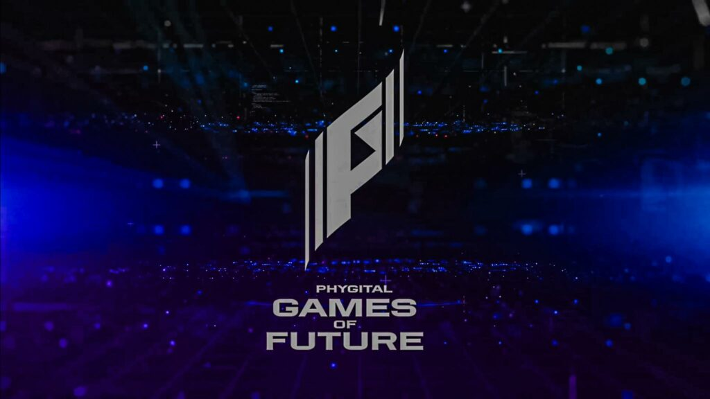
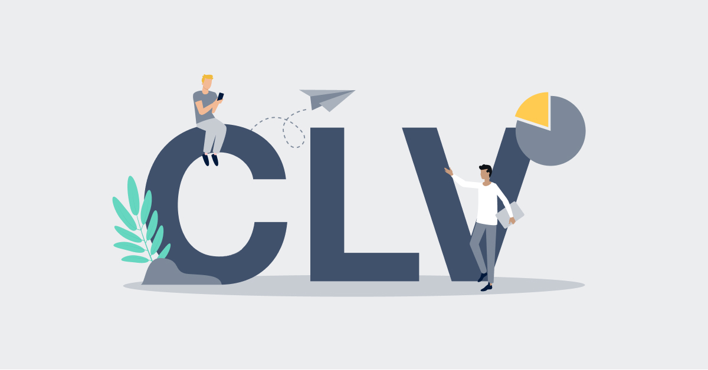

Welcome
April 25, 2024
Data Analysis of
NYC Taxi and Limousine
In this project, an analysis of the NYC TLC taxi customer patterns will be conducted.
The analyses to be carried out are:
1. Analysis based on time patterns
2. Analysis based on favorite location patterns
3. Analysis based on customer preferences and behavior
4. Analysis of tipping patterns
February 28, 2024
Simple Crud Application
Using Python

Creating a Simple Database System Using Python
This project demonstrates how to create a simple database system simulation with features to Create, Read, Update, and Delete using only Python
May 15, 2024
Currency Exchange Service
Using Python

Creating an application system for currency exchange using Python and a currency API. This project demonstrates a simple flow in handling currency exchange cases using voucher codes
May 3, 2024
Analysis Tournament MLBB
Game Of Future Russia

The app processes match data to generate insights on hero picks, bans, and team performance,
with graphical representations. Users can input team or player names to retrieve specific data, enhancing interactivity.
May 27, 2024
Vehicle Insurance Company
CLV Prediction

Developed machine learning models to predict Customer Lifetime Value (CLV) for a vehicle
insurance company, enabling targeted marketing strategies to boost revenue and retain
customers. Using regression metrics (RMSE, MAPE, MAE) to evaluate model performance
May 28, 2024
Face Detection
Algorithm Viola-Jones
In this project, I created and explained the workings of face detection using the Viola-Jones algorithm.
The step to be carried out are:
1. Using Haar-like Filters
2. Using Sliding Window
3. Using Image Pyramid
4. Concept of Non-Maximum Suppression